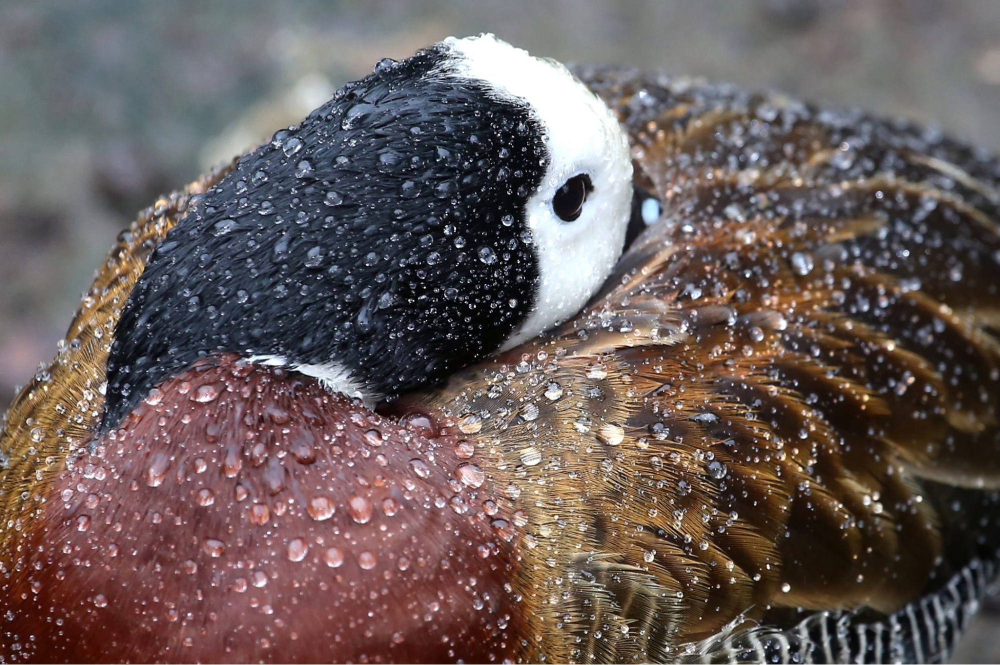
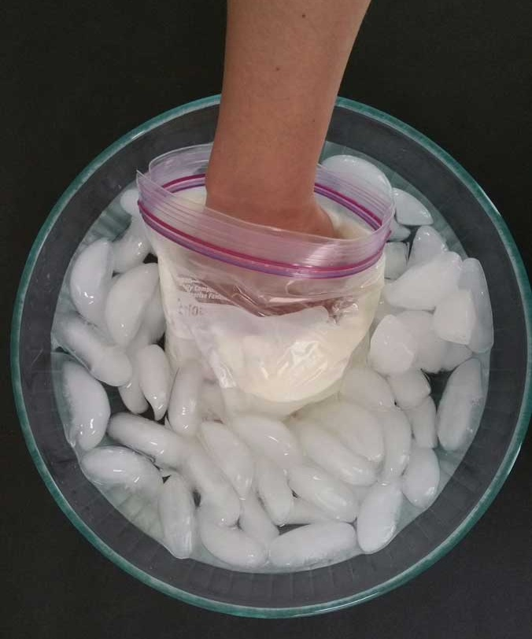
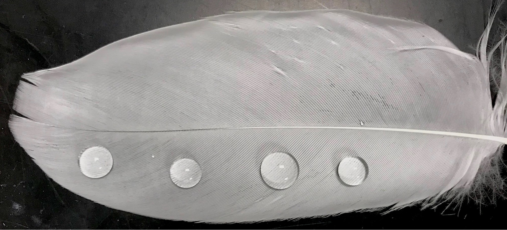
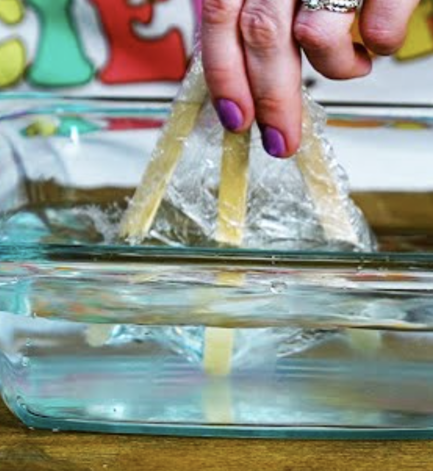
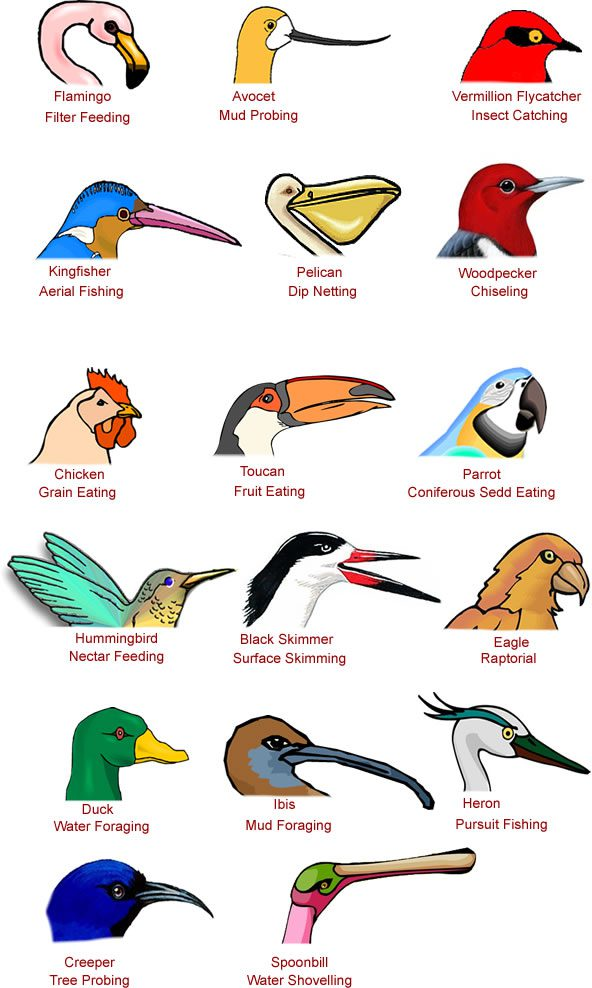
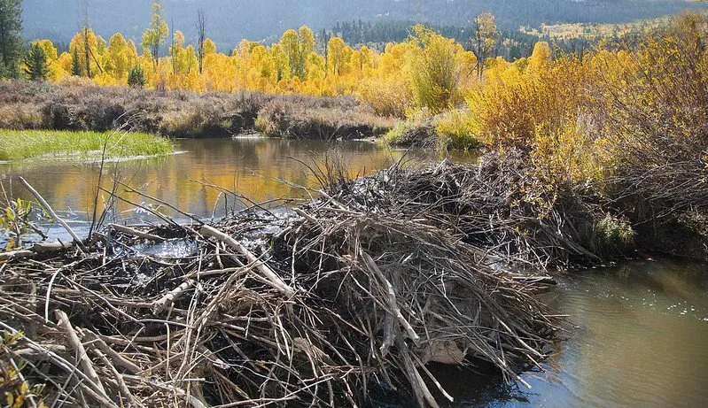
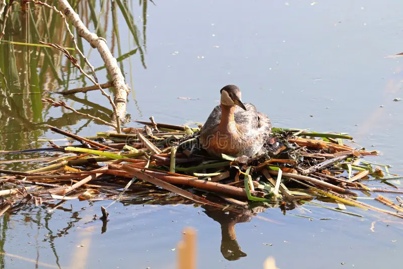
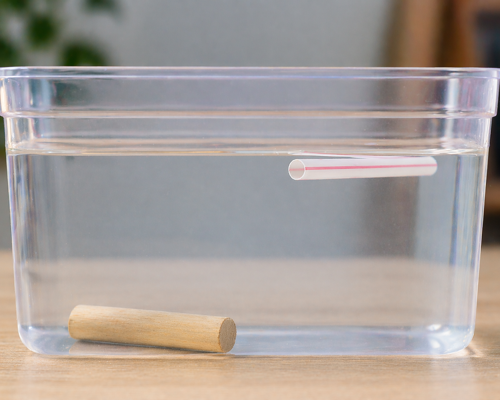

Set the tone for the walk and introduce the topic before beginning the walk. This should take between 5–10 minutes — nothing longer than the attention spans of the kids.
Opening Duaa
Start with a duaa for protection from harm and evil. The duaa can be led by either the walk leader or a child who has the duaa memorized.
“They also say, ‘Why has no sign been sent down to him from his Lord?’ Say, ‘Allah certainly has the power to send down a sign,’ though most of them do not know: all the creatures that crawl on the earth and those that fly with their wings are communities like yourselves. We have missed nothing out of the Record — in the end they will be gathered to their Lord.”
Surah Al-An‘am 6:37–38
This ayah teaches us that all creatures form communities, just as we do. Last week, we explored the communities found in mud. This week, we will learn about the various animal communities that live in and around water, with a focus on warm-blooded animals. Studying these animals is an act of worship and contemplation — it is not simply an exercise in observation! When the disbelievers asked for a miracle from the Prophet, this is what Allah directed their attention to: the way animals build community is enough of a sign and a miracle!
This is information to share with the kids. What you share and the level of detail will depend on the ages of the kids in your pod. Use your discretion.
Over the last few weeks, we have studied how water flows, shapes the earth, and creates bustling mud cities. But water doesn’t just grow plants; it is a giant playground, dining room, and home for some of the most amazing animals on Earth! Today, we are looking at the birds and mammals who spend their lives splashing, swimming, and diving. Allah perfectly designed certain birds (the two-legged) and mammals (the four-legged) with special tools to survive in the water!
Amazing Water Adaptations
When humans go swimming, we need flippers, goggles, and towels. But water animals are born with built-in swimming gear! Scientists call these special body parts adaptations. Please print the accompanying chart with examples.
Waterproof Wardrobes: Nobody likes wearing cold, wet clothes. To stay dry, ducks and geese have a special gland near their tails that produces oil. They spread this oil all over their feathers using their beaks, creating a waterproof shield! Mammals like beavers and river otters have incredibly dense, thick fur that traps a layer of air against their skin, keeping them perfectly dry and warm even in freezing water. Many water mammals also carry a layer of fat just beneath their skin that acts like a built-in wetsuit, slowing heat loss no matter how cold the water gets. Whales and seals have thick blubber layers. Closer to home, otters and beavers along the Trinity River rely on a combination of dense fur and a thin fat layer to stay warm in North Texas winters.
Built-in Paddles: If you want to swim fast, tiny feet won’t help. Allah gave ducks, swans, and pelicans webbed feet — skin stretched between their toes that acts like giant paddles. Beavers have webbed back feet and a wide, flat tail that steers them like a boat’s steering oar!
Specialized Tools: Herons have long, skinny legs so they can wade into deep water without getting their tummy feathers wet, and spear-like beaks to snatch fish. Beavers have giant, orange teeth coated in iron so they can chop down trees to build their watery homes!
Built-in Ballast: Ever notice how a duck sits perfectly on the water without effort — never sinking, never tipping? Allah designed water birds and mammals with just the right density to float naturally. Some go further: cormorants have denser bones to help them sink and chase fish, and grebes can squeeze air from their feathers mid-dive to control exactly how deep they go.
Local Landmarks: Our DFW Water Neighbors
If you visit the Elm Fork, Lake Lewisville, or the wetlands at the Trinity River Audubon Center, you don’t have to look hard to find these amazing creatures in our own backyard!
The Great Blue Heron (The Silent Fisherman): If you walk quietly near the edge of almost any creek in North Texas, you might see a bird that looks like a tall, grey dinosaur standing perfectly still in the shallows. This is the Great Blue Heron, patiently waiting to strike a fish!
The Snowy Egret (The Golden-Slippered Hunter): Egrets are the beautiful, bright white cousins of the Great Blue Heron. The Snowy Egret has a brilliant hunting trick: Allah gave them bright yellow feet that look like golden slippers! They stand in the shallow water and wiggle their bright toes in the mud. The fish think the yellow toes are worms, and when they swim over to eat them, the Egret strikes! You will see these elegant white birds wading in the shallows of almost every lake and pond in the DFW area, especially around Lake Lewisville.
The Belted Kingfisher (The Diving Acrobat): While herons wade in the water, the Kingfisher hunts from the sky! They sit on branches high above the water, hovering like a helicopter when they spot a fish, and then dive head-first like a dart into the water to catch it. These birds love the wooded creeks of the Elm Fork. You will usually hear them before you see them — they have a loud, chattering, rattling call that sounds like a dry piece of wood being scraped!
The Mallard Duck (The Dabbler): You will see these everywhere, especially the males with their bright green heads. They are called “dabblers” because instead of diving deep, they tip entirely upside down with their tails in the air to grab bugs and plants from the shallow mud!
The American Beaver (Nature’s Engineer): Yes, we have beavers in Dallas! They live in our local rivers and creeks. They are famous for chewing down trees and stacking the wood to create dams. These dams actually slow down the water, creating deep, safe ponds where other animals can live. They are the only mammal (besides humans!) that actively changes the shape of their habitat.
The Nutria (The Imposter Beaver): Nutria (or coypu) look a lot like beavers, but they have skinny, rat-like tails instead of flat, paddle tails, and large white whiskers. If you see what looks like a small beaver swimming in a local pond or creek in North Texas, it is very likely a nutria! They are actually an invasive species (originally from South America). They teach us an important lesson about the balance of Allah’s ecosystems: because they don’t have natural predators here, they eat too many wetland plants, which can cause the riverbanks to erode (slowly be destroyed).
The North American River Otter (The Playful Swimmer): Otters are built for underwater acrobatics. They have long, torpedo-shaped bodies, webbed toes, and a thick, muscular tail that acts like a propeller. They can hold their breath for up to 8 minutes! For a long time, otters had disappeared from our area because the water was too polluted. But because of hard work by local conservationists to clean up the Trinity River, the otters are making a huge comeback! You can sometimes spot them playing and sliding down muddy banks into the river.
We have learned a lot about how animals survive in the water, and Islam teaches us that we also have a responsibility to share water with them. When we visit our local lakes and rivers, we must never pollute them or leave trash behind. Keeping the water clean is one way of showing mercy to the ducks, herons, beavers, and other animals who rely on it!
Now that we are all up to speed on this week’s topic, let’s start walking! The following are some conversations and activities to do as you walk. This should take about 30–60 minutes — again, nothing longer than the stamina of the kids.
The Most Beautiful of Names
Introduce the name of Allah and its basic meaning as you start your walk. Encourage the kids to reflect on the name throughout the walk, as well as mentioning it whenever relevant.
الْمُقْسِطُ
Al-Muqsit
The Equitable
The way water is distributed throughout the planet is not even. There are wetlands and rainforests in some parts of the planet, and dry, arid deserts in others. It may not be even, but it is balanced — Allah is Al-Muqsit, the Equitable, and He has granted the animals in their respective environments the proper adaptations for surviving according to the level of water available to them. Just as Allah is Equitable with other creation, He is with us as well. We are not all given rizq equally, but that does not negate the quality of Al-Muqsit: there is a balance, and though we may not see it or fully understand it, we accept that it is there because we see it in other parts of creation.
Phew, that was a good walk! Let’s pause and apply what we have learned and reflect on what we have observed.
Stories for Blooming Hearts
Share a story from our tradition that ties to this week’s topic. Note that creating an engaging storytelling experience is on the storyteller; these are just the basic details. A story told from the heart will reach hearts!
Yunus AS in the Belly of the Whale
Yunus AS was one of the noble Prophets of Allah. Like the other prophets, he was tasked with teaching people about Allah, the Last Day, the Hereafter, and to warn them against believing in idols.
Despite years and years of giving dawah, Yunus AS’s people did not listen to him nor believe in him. They even mocked him, daring him to bring on the punishment if it was truly possible, so he decided to pack up and leave town, fearing punishment may come to them. However, Allah had not told him to leave.
Yunus AS boarded a boat to leave town. During his tumultuous journey, the boat rocked back and forth and they needed to get rid of things to stay afloat. The passengers threw their belongings in the sea but it was still not enough. They would have to get rid of one of the passengers.
As was their custom, they drew lots to decide fairly who would have to go. Despite them knowing that Yunus AS was such a good person and not wanting to throw him overboard, his was the name that kept getting picked over and over!
They threw Yunus AS overboard and when he landed in the sea, a whale swallowed him up! Of course, all of this was Allah’s plan to teach us a lesson.
While in the belly of the whale, in the darkness of the night, in the darkness of the ocean, Yunus AS began to make the dua:
“There is no god worthy of worship except You. Glory be to You! I have certainly done wrong.” (21:87)
Allah SWT accepted his dua and had the whale spit Yunus AS out so he was able to make it to the shore.
He was given shade under a gourd (pumpkin) vine, which was exactly what he needed to heal from his ordeal in the belly of the whale.
Meanwhile, in his town of Nineveh (in present-day Iraq), Allah SWT made the sky red with signs of punishment until the people were so frightened that they began to call out to Allah, asking for His forgiveness and mercy. They made dua for Yunus AS’s return so they could listen to him and follow him. Allah SWT accepted their tawba.
When Yunus AS returned to town, he returned to believers who were ready to listen to him and follow his guidance.
Suggested Resource: Super Stories of the Prophets by Mariam Elgammal
Takeaways
We learn from this story not to give up on our responsibilities. Yunus AS left his people and stopped preaching to them without Allah’s permission, hence Allah put him through this test.
This story is a powerful reminder of the benefits of turning back to Allah in tawba, and especially of the Dua of Yunus AS.
No matter how difficult a challenge you may go through, know that Allah is with you and can help you through your struggles.
Why doesn’t a duck get soaked? Let’s find out how oil keeps water birds dry and warm.

Materials to bring from home
2 pieces of plain white paper per child
White wax crayon or a plain candle
Water in a spray bottle
Blue food coloring (optional but makes it more dramatic)
Activity
Tell the kids: one piece of paper is a regular bird, the other is a duck with its special oil coat.
Have them color the “duck” paper heavily with the white wax crayon or candle; cover it well, even though they can’t see it. This represents the duck’s natural oil.
Add a few drops of blue food coloring to the spray bottle water and mix.
Spray both papers at the same time and watch what happens.
The “regular bird” paper soaks the water straight in. On the “duck” paper, water beads up and rolls off.
Connect it back: Allah gave ducks a special gland that coats their feathers in oil, just like the wax on their paper. That’s what keeps them dry and warm.
Alternate activity for this age group in the addendum: Webbed Feet Paddle Test
Mammals that live in and around cold water — like otters, beavers, and muskrats right here in North Texas — need to stay warm even when the water is cold. This is how Allah protected them.

Materials to bring from home
2 large ziplock bags per child (quart or gallon size)
1 container of shortening (Crisco)
Large bowl or tub filled with cold water and ice
Plastic gloves or extra bags to keep hands clean
Paper towels
Activity
Prepare the “blubber glove”: scoop a generous layer of shortening into one ziplock bag. Place a second bag inside it, folding the inner bag’s opening back over the outer one so the shortening is sandwiched between the two bags — creating a sealed fat layer.
Have each child put one hand inside the blubber glove and leave the other hand bare.
Submerge both hands in the ice water at the same time.
Which hand feels cold? Which feels protected?
Pull both hands out and compare.
Discussion
Which hand felt cold and which felt protected, and why?
The hand inside the blubber glove stayed warm because the fat layer slows heat from escaping the body. Fat doesn’t conduct heat well, so the cold water couldn’t pull warmth away as quickly.
What animals use blubber or fat layers to survive in cold water?
Whales, seals, and walruses have thick blubber layers. Closer to home, otters, beavers, and muskrats — all found along the Trinity River and local creeks right here in DFW — rely on a combination of dense fur and a thin fat layer to stay warm.
Do birds have insulating fat too? What else do they do to stay warm?
Water fowl also have insulating fat. Additionally, they stay warm through waterproof feathers that trap a layer of air against their skin. That air acts as insulation, just like the fat layer in the glove. A soaked, unpreened bird loses that air pocket and gets cold fast, which is why waterproofing and insulation work together.
Allah gave each creature exactly what it needs for where it lives. Why do you think He gave otters fur and fat instead of feathers?
Open reflection. Otters need to move fast and flexibly through water; a sleek fur coat serves them better than feathers would. Every design choice fits the creature’s life perfectly.
For Kids 9–12: Waterproof Feathers & the Waterproofing Challenge
Before this activity, look for a bird near the water: a Great Blue Heron, a duck, or even a grackle near the pond. Notice how even after splashing, their feathers never look soaked. Why?

Materials to bring from home
1–2 craft feathers per child
Small tray or shallow bowl of water
Tissues or cotton balls
Small dropper or spoon for dripping water
A selection of waterproofing candidates: petroleum jelly (Vaseline), beeswax, coconut oil, olive oil, lip balm — bring 2–3 options
Squares of fabric or paper towel (one per waterproofing candidate, plus one untreated control)
Note: Collecting wild bird feathers is illegal under the Migratory Bird Treaty Act — use craft feathers for this activity.
Part 1: Observe the feather
Drip water onto the feather and watch it bead and roll off. Now drip the same amount onto a tissue or cotton ball. Notice how it soaks straight through.
Gently stroke the feather from base to tip — this is preening. Run your fingers against the grain and watch the feather “unzip,” then smooth it back together.
Dip the tissue in the water and hold it up. That’s a coat with no waterproofing.
Discuss: birds have a preen gland near their tail that produces natural oil. They spread it through their feathers with their beak — a built-in raincoat that Allah designed perfectly.
Part 2: Engineering challenge
Allah created birds with waterproofing. Challenge the kids to waterproof fabric and predict which material they think will work best before testing anything.
Give each child a set of fabric/paper towel squares. Leave one untreated as a control, then rub a different substance into each of the remaining squares.
Drip the same amount of water on each square and observe. Draw attention to where water beads vs. where it soaks in. Ask: which one behaves most like the feather did?
Discussion
What made the best-performing material work? Was it thickness, texture, or how well it bonded to the fabric?
The oilier and smoother substances (petroleum jelly, coconut oil) tend to fill the tiny gaps between fibers and repel water. Thicker doesn’t always mean better — it’s about how well it coats the surface.
Birds preen multiple times a day and constantly re-apply their oil. Why do you think that is?
The oil wears off over time through swimming, rain, rubbing against things, and sun exposure. Without regular re-application, their feathers would eventually get waterlogged, making them heavy, cold, and unable to fly.
What would happen to a duck that couldn’t preen?
Its feathers would lose their waterproofing and the duck could actually get hypothermia — cold water would reach the skin. This is why oil spills are so devastating to waterbirds; the oil coats their feathers and destroys their natural waterproofing.
Allah designed the preen gland to produce exactly the right oil for each bird’s habitat. What does that tell us about how He designed creation?
Open reflection — every detail has a purpose, nothing is accidental.
After completing the activity is a good time to stop for a snack. Power their brains and bodies with something nutritious! Bonus points for avoiding single-use plastics and being good Khulafa. Be sure to leave the area as you found it, or better, following the good manners taught to us by our Prophet ﷺ.
Now that this week’s walk is just about done, let’s wrap it up.
Tadabbur Among the Trees
Here are some prompts to help wrap up the walk. These prompts can be used to spark a conversation or to fill up your nature journal for today!
For Kids 1–4
How long can you play in the water before it starts to affect your skin/body? Is there anything you wear or do to stay in the water longer?
How would your life be different if you lived in the water all the time?
For Kids 5–8
If you were to spend most of your time in water, would you want to keep warm with a blubber suit or a waterproof feather suit? Draw yourself in your suit of choice.
Write a story about your favorite water bird or mammal.
For Kids 9–12
Think of some of the birds that rest in water and draw them.
List some of the aquatic animals that you know. Can you group them by their physical features and size?
Need more nature? We got you! Here are some additional resources to further enrich your understanding and reflection. These additional resources can be utilized by the pod, by individual families, or a combination of both — whatever best fits your needs!
Prophetic Wisdom
Find an opportunity to share the wisdom of our Prophet ﷺ as you walk.
“Peoples will enter paradise with hearts like the hearts of birds.”
Abu Huraira — Sahih Muslim 2840
This hadith shows us that we can benefit and learn from animals spiritually. Scholars explain that having hearts like birds means we should strive to have hearts “(1) with no jealousy, rancour, deceit, or hatred; (2) in trepidation, being on their guard; (3) with complete trust, as birds trust God for their food” (Mishkat Al-Masabih 5625). May Allah make us have clean, cautious hearts full of tawakkul like the birds! Ameen.
“There are signs in the heavens and the earth for those who believe: in the creation of you, in the creatures Allah scattered on earth, there are signs for people of sure faith.”
“How many are the creatures who do not store their sustenance! Allah sustains them and you: He alone is the All Hearing, the All Knowing.”
What are some animals that store their sustenance? What are animals that seek their food each day at a time? All are being provided for by Allah, regardless of how they attain their provisions. And so are we.
“The seven heavens and the earth and everyone in them glorify Him. There is not a single thing that does not celebrate His praise, though you do not understand their praise: He is most forbearing, most forgiving.”
Everything you see around you glorifies Allah in its own way, though we do not understand how. What are some things you see around you right now that are doing tasbeeh? Why don’t you join them for a moment?
“Have you not considered how Allah sends water down from the sky and that We produce with it fruits of varied colours; that there are in the mountains layers of white and red of various hues, and jet black; that there are various colours among human beings, wild animals, and livestock too? It is those of His servants who have knowledge who stand in true awe of Allah. Allah is almighty, most forgiving.”
What different colorations did you see on animals today? What about in other parts of creation? This variety of color is a sign from Allah, as well as a mercy to us — He beautified the world for us to enjoy and to connect to Him!
“Do you not realize [Prophet] that everything in the heavens and earth submits to Allah: the sun, the moon, the stars, the mountains, the trees, and the animals? So do many human beings, though for many others punishment is well deserved. Anyone disgraced by Allah will have no one to honour him: Allah does whatever He will.”
Almost all of creation submits to the will of Allah. Humans are given the choice. Will we be like the vast majority of creation and do the natural thing by submitting to our Creator, or be within the minority that deviates from the natural by disobeying Him?
A flow of movements to get kids’ energy out at the beginning, or help them calm down at the end of the walk.
1
Begin by thinking of Salaam/Peace within you. Stand tall and open your arms wide like a pelican spreading its wings. Take a slow deep breath in as you lift your arms up, then breathe out slowly as you swoop them gently down, bending your knees like you’re gliding in to land on the water. Stay here for a breath, then rise slowly and repeat for a few more slow sweeps.
2
Next transition to a flamingo! Slowly shift your weight on one leg and bring your palms pressed together. Balance on one foot, then slowly tuck your chin toward your chest and look down. Notice how much harder balance is now! Hold for a few slow breaths, then lift your head back up. Switch feet and repeat on the other side.
3
Now make your way down to the ground, lay on your back, listening to the sounds of water. Imagine that you’re a sea otter floating! Place your hands on your belly. Breathe in slowly and feel your belly rise like the otter’s tummy above the water. Breathe out and feel it fall. On each exhale, let your arms float out wide. You can also lift your head for a belly crunch while you float your arms up and down as you breathe.
4
Now bring yourself up to a seated position and think of swans. Swans paddle calmly on top of water but work hard underneath! Sit tall with a long graceful neck, take a deep inhale and roll your shoulders up to your ears, and with an exhale, roll them down your back and away from your ears. Keep your legs crisscrossed, flex your feet at the ankles, squeeze your toes and then extend and release them slowly, one foot then the other, like paddling. Breathe slow and steady the whole time.
Here are more activities to try, whether as a group with your pod or individually at home.
For Kids 1–4: Webbed Feet Paddle Test
Watch how Allah designed ducks, otters, and beavers with built-in paddles — and try it yourself!

Materials to bring from home
3 popsicle sticks per child
Saran wrap / plastic wrap
Tape
Scissors
Small tub or basin filled with water
Activity
Tape 3 popsicle sticks side by side, leaving a little space between them, like spread-out fingers.
Cut a piece of Saran wrap and stretch it across the sticks, covering the gaps between them. Wrap the Saran multiple times or tape it down on both sides. This is your “webbed foot.”
Fill a tub with water.
First, dip just 3 fingers into the water and paddle. Feel how much (or how little) water your fingers push.
Now use the webbed stick paddle and feel the difference: it catches and pushes much more water with every stroke.
Talk about it: which one would help you swim faster? Allah gave water animals like ducks, otters, and beavers this exact design — a wider surface to push more water with less effort.
Every bird’s beak is perfectly designed for what and where it eats. Try them all and feel the difference.

The “Beaks”
Chopsticks or long wooden skewers (heron’s spear)
Slotted spoon or small strainer (duck’s bill)
Tweezers or clothespin (small songbird’s beak)
Small paper cup or soup ladle (pelican’s scoop)
The “Habitats and Food”
Tall narrow vase or plastic bottle with top cut off, filled with water and floating grapes or marshmallows (deep water)
Wide shallow bowl filled with water and mud or sand, with small beads or dry beans mixed in (muddy shallows)
Plate of dry rice or sunflower seeds (dry land)
Activity
Set up the three habitats on a table before the kids arrive.
Hand a child the duck bill (slotted spoon) and give them 15 seconds to pick up seeds from the dry plate. Watch them struggle — a flat spoon is terrible at grabbing tiny seeds.
Now move the same child to the muddy shallows bowl with the same spoon. Watch it scoop up beans while water and sand drain right through — exactly what a real duck’s bill does.
Switch to the heron’s spear (chopsticks) and ask them to retrieve a grape from the tall vase without knocking it over. Only a long, precise tool reaches.
Rotate kids through the stations, swapping beaks and habitats so everyone gets to feel what works and what doesn’t.
Discussion
Which beak worked in more than one habitat? Which only worked in one?
Specialist beaks (heron’s spear, pelican’s scoop) are highly effective in one setting but useless elsewhere. The tweezers work across a few habitats but aren’t exceptional in any. Allah designed each beak for a specific life, not a general one.
What would happen to a heron if its wetland dried up?
Its spear-beak is useless on dry land seeds or in muddy shallows. Habitat loss hits specialist animals hardest: their design only works in one place.
Which “beak” felt most satisfying to use and why?
Draw out the idea that the right tool in the right context feels effortless, while the wrong one feels frustrating no matter how hard you try.
For Kids 5–12: Beaver Dam Engineering Challenge
Beavers are some of the most remarkable engineers in the animal world — and they do it all with their teeth, claws, and instinct. Can your team build something that holds back water?

Materials to bring from home
Large plastic tray, bin, or use a shallow section of a natural stream if available
Water (if not near a natural source)
Materials to collect from nature
Sticks of varying sizes
Mud (collected on site)
Leaves, bark, pebbles
Activity
Set the challenge: build a dam across your tray or a section of stream that slows or holds back water. You have 10 minutes.
Collect your materials from the surrounding area: sticks, mud, leaves, stones.
Build! Encourage teams to experiment with layering (sticks first, then mud packed in, then more sticks).
Test by slowly pouring water on one side or allowing the stream to flow. How well does it hold?
Observe what happens over time: does the mud seal tighten as it gets wet? Does anything shift or break?
Discussion
What was the weakest point in your dam and what would you fix?
Usually gaps between sticks where mud didn’t seal. Beavers solve this by constantly patching and reinforcing. Maintenance never stops.
Why do beavers bother building dams at all?
The pond they create does everything: deep water doesn’t freeze solid in winter so they can swim to food stores under the ice, the depth hides their lodge entrance from predators, and the wetland it creates supports an entire ecosystem of animals that depend on it.
Allah gave beavers no blueprints and no teachers, yet every beaver builds the same way. What does that tell us?
Open reflection. For ages 9–12: Give them 5 minutes to redesign after the first test. What did they change? Did it hold better?
For Kids 5–12: Floating Nest Challenge
Grebes, water birds found on Texas lakes and reservoirs, build nests that float on the surface of the water, anchored to reeds. They rise and fall with the water level, never flooding. Can you build one that holds an “egg”?

Materials to bring from home
Small rock or large marble per team (the “egg”)
Large bowl or tub of water for testing
Materials to collect from nature
Reeds, sticks, leaves, dried grasses, seed heads — whatever is available on the trail
Activity
Introduce the challenge: build a floating nest from natural materials that (a) floats, and (b) holds the “egg” without it falling off or sinking.
Collect materials along the trail before settling in to build.
Build your nest: weave, stack, and layer as needed.
Place it in the water. Does it float? Place the egg in the center. Does it hold?
Gently create small waves. Does the nest survive the movement?
Discussion
What materials floated best and which sank? Did that surprise you?
Dense or waterlogged materials sink fast. Dry, fibrous, and hollow materials trap air and float. Allah has taught grebes which material to select.
How did you distribute the weight of the egg?
A wide, flat base spreads weight across more surface area. A narrow or lopsided nest tips easily, which is the same challenge a real grebe faces.
Allah designed the grebe to build a floating home with no tools and no instruction. What does that mean for how we think about instinct?
Open reflection. For ages 9–12: Redesign after the first test. What one change made the biggest difference?
For Kids 9–12: Hollow Bones vs. Dense Bones
Diving birds like grebes and cormorants can actually adjust how deep they sink by controlling how much air is in their bones and air sacs. Most birds have hollow bones to stay light, but not all of them.

Materials to bring from home
2 similarly sized objects of very different weight (e.g., a solid wooden dowel vs. a straw of the same length; or a solid rubber ball vs. a ping pong ball)
A basin or tub of water
A kitchen scale (optional but great)
Activity
Before testing: hold one object in each hand. Which feels heavier? Make a prediction: which will float, which will sink, which will do something in between?
Place both objects in the water. Observe: does the denser one sink faster? Does the hollow one float or bob?
If using a scale: weigh both objects and calculate the difference. How much less does the hollow one weigh?
Note that some diving birds like cormorants actually have denser bones than most birds. It helps them sink below the surface to chase fish. Not all birds are built the same way.
Discussion
Most birds have hollow bones for flight, but cormorants have denser bones to help them dive. What does that trade-off mean?
Denser bones make cormorants heavier and less efficient in the air, but far more effective underwater. They’re built for diving first, flying second. Allah optimized each creature for its primary role.
If a bird has hollow bones and still needs to dive, how does it manage?
Some birds compensate through the angle they enter the water, strong swimming strokes, and using their wings as paddles underwater. Gannets dive from great heights and use the momentum of impact to plunge deep despite being relatively light-boned.